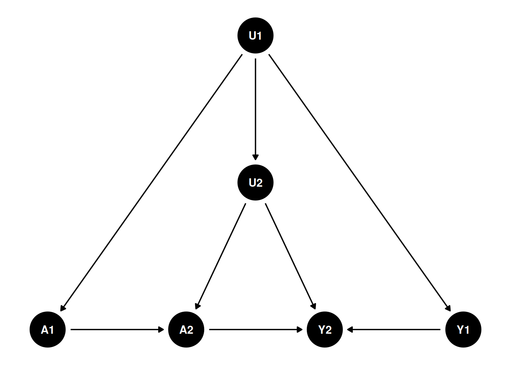
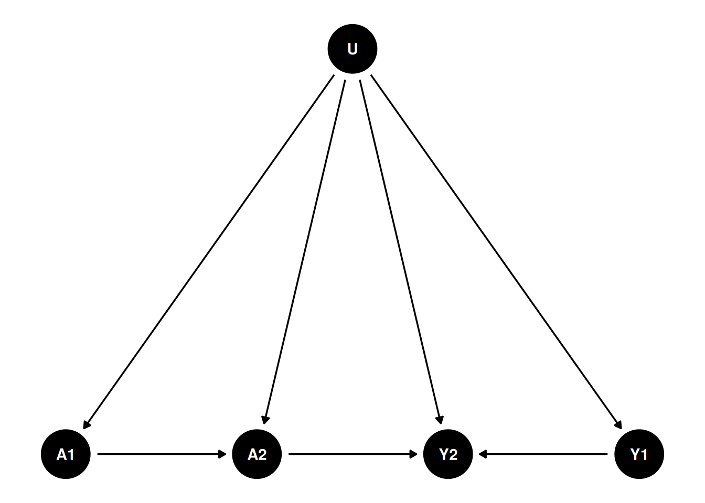

34 Simulation on proximal causal inference with panel data
This is to continue the discussion on proximal causal inference. The idea is to use negative controls to estimate the causal effect of treatment on outcome while accounting for unobserved confounders. This is a follow-up of the previous post on proximal causal inference.
In this post, I am trying to see whether we can use lagged \(D\) and lagged \(Y\) as NCE and NCO, in a panel data setting. The idea is to use the lagged treatment as a negative control exposure (NCE) and the lagged outcome as a negative control outcome (NCO).
Let’s see a two period DAG:
Suppose that’s the case for the causal structure, then I can reasonably combine U1 and U2 into a single unobserved confounder \(U\):

That would fit into the double negative control framework. The problem is that we have to assume there is no link from A1 to Y1, which is odd. Can we assume in period 1 there is no effect, but in period 2, there is an effect?
34.1 A simulation with panel data
I generate two period data based on the DAG above.
library(dplyr)
library(rootSolve)
library(tidyverse)
gen_data <- function(seed, n){
set.seed(seed)
u <- rnorm(n, mean = 0, sd = 1) # unobserved confounder
x1 <- rnorm(n, mean = 0, sd = 1) # observed confounder
x2 <- rnorm(n, mean = 0, sd = 1) # observed confounder
a1 <- rbinom(n, 1, plogis(2*u + 1.5*x1)) # treatment at time 1
a2 <- rbinom(n, 1, plogis(u + a1 + x1)) # treatment at time 2
y1 <- 1.5*u + .5*x1 + rnorm(n, mean = 0, sd = 1) # outcome at time 1
y2 <- y1 + 2.5*u + 2.5*x1 + 3*a2 + rnorm(n, mean = 0, sd = 1) # outcome at time 2
data <- data.frame(u=u, x1=x1, x2=x2, a1=a1, a2=a2, y1=y1, y2=y2)
return(data)
}
data <- gen_data(333, 100000)We can use the simple 2sls:
Call:
lm(formula = y ~ a + x + what, data = data_sim)
Residuals:
Min 1Q Median 3Q Max
-16.4284 -2.3083 0.0071 2.3020 20.7590
Coefficients:
Estimate Std. Error t value Pr(>|t|)
(Intercept) -0.01293 0.02315 -0.558 0.577
a 3.02113 0.03528 85.625 <2e-16 ***
x 1.67203 0.01245 134.327 <2e-16 ***
what 2.66578 0.01747 152.631 <2e-16 ***
---
Signif. codes: 0 '***' 0.001 '**' 0.01 '*' 0.05 '.' 0.1 ' ' 1
Residual standard error: 3.456 on 99996 degrees of freedom
Multiple R-squared: 0.6822, Adjusted R-squared: 0.6822
F-statistic: 7.155e+04 on 3 and 99996 DF, p-value: < 2.2e-16Or we can use more sophisticated methods. Here I use the m-estimation code by Paul Zivich: https://github.com/pzivich/publications-code/blob/master/ProximalCI/proximal_sims_r.R. This code is to construct estimating equations, then use root finding to find the parameter estimates.
pcl_m2 <- function(theta, mydata, out = "ef"){
# read in variables
a <- mydata$a
x <- mydata$x
w <- mydata$w
z <- mydata$z
y <- mydata$y
# model for what
what <- theta[1] + theta[2] * a + theta[3] * x + theta[4] * z
# matrix of covars in model for what
wmat <- as.matrix(cbind(rep(1, nrow(mydata)), a, x, z), ncol = 4,
nrow = nrow(mydata))
# estimating function for what
ef1 <- (t(wmat) %*% (w - what)) # gives px1 vector (summed over units)
ef1_b <- wmat * (w - what) # gives nxp matrix (rows are units)
# model for yhat
yhat <- theta[5] + theta[6]*a + theta[7]*x + theta[8] * what
# matrix of covars in model for yhat
ymat <- as.matrix(cbind(rep(1, nrow(mydata)), a, x, what), ncol = 4,
nrow = nrow(mydata))
#estimating function for yhat
ef2 <- t(ymat) %*% (y - yhat) # px1 vector, summed over units
ef2_b <- (ymat) * (y - yhat) # nxp matrix (rows are units)
f <- c(ef1, ef2) # p-dimensional vector
if(out == "full") return(cbind(ef1_b, ef2_b)) else return(f) # full used in var calculation only
}
# call m-estimator for PCL
mpcl_mest <- function(dat){
theta_start <- rep(.05, 8)
results <- mestimator(pcl_m2, init = theta_start, dat, mydata = dat)
return(results)
}
##' M-estimation engine
mestimator <- function(ef, init, dat, ...){
# get estimated coefficients
fit <- multiroot(ef, start = init, out = "ef",
rtol = 1e-9, atol = 1e-12, ctol = 1e-12, ... )
betahat <- fit$root
n <- nrow(dat)
# bread
# derivative of estimating function at betahat
pd <- gradient(ef, betahat, out = "ef", ...)
pd <- as.matrix(pd)
bread <- -pd/n
se_mod <- sqrt(abs(diag(-solve(pd))))
# meat1
efhat <- ef(betahat, out = "full", ...)
meat <- list()
meat1 <- (t(efhat) %*% efhat)/n
# sandwich
sandwich1 <- (solve(bread) %*% meat1 %*% t(solve(bread)))/n
se_sandwich1 <- sqrt(diag(sandwich1))
results <- data.frame(betahat, se_sandwich1, se_mod)
return(results)
}Both the 2sls and the m-estimation give us the same estimate of the causal effect of treatment on outcome, which is 3. The m estimator can be more general. 2sls is good for the linear case.
However, the main issue is the assumption that there is no link from A1 to Y1.
To think about it from a different angle: this is similar to DiD setting. Basically we need A1 to be 0. There is no effect in period 1. If we only have A1 as 0, then it makes sense to have no link from A1 to Y1 (no anticipation assumption).